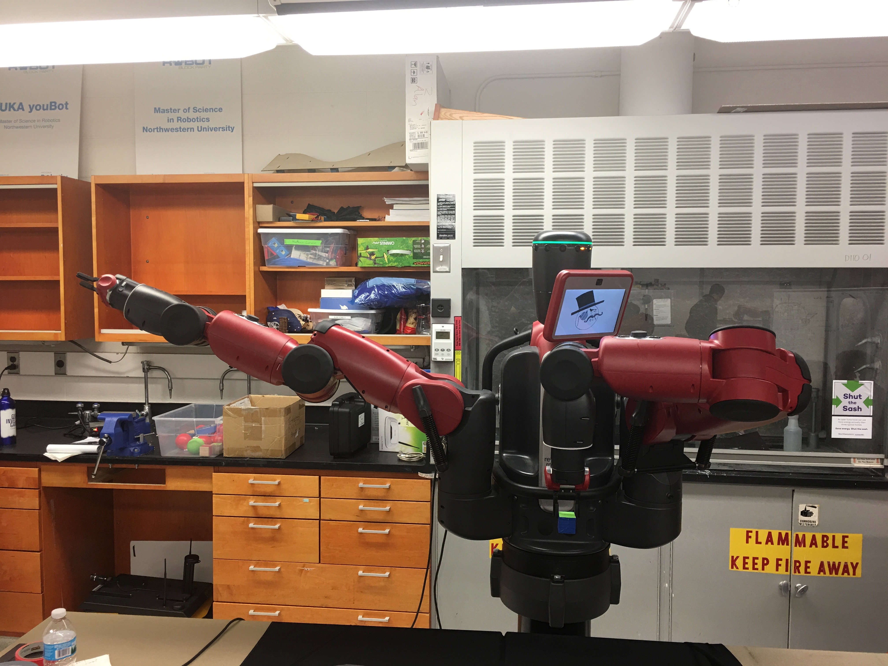

Baxter - The Advanced Robotic Servant
Overview
As part of a final project for Embedded Systems in Robotics, our group was posed with the task of using Baxter in order to demonstrate experience with ROS. The requirements of the project were as follows: teams must use Baxter's arms to pick up and place several different objects, they must use one or more of Baxter's built in sensors (cameras, accelerometers, etc.), they must create at least one ROS package to hold the project, and lastly, use Github to upload and thoroughly document their projects (The full project can be found here).
The objective of our project was a simple setup for a fancy dinner using the extensive capabilities of Baxter. Given a set of three utensils (a fork, a spoon, and a knife), Baxter is required to place them in a specified position relative to a plate, akin to proper table setting in a fancy restaurant. Each utensil is marked with a different color (red, green, or blue), which allows Baxter to differentiate between them and pick and place them in their proper positions. In this demonstration, Baxter also determines the position of the plate and stores it for future reference.
 |
A full list of all the nodes, services, launch files, and all other tools used for this project can be seen in the Github page provided. Full Project